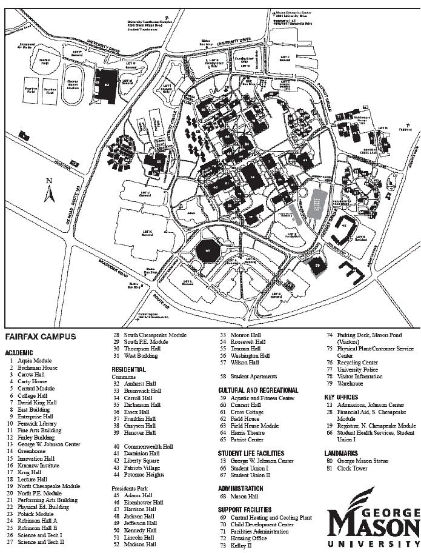

DIRECTIONS TO THE RECEPTION - May 8, 2005
We have been informed that there may be a performance at GMU around the same
time as the reception on Sunday, so traffic may tend to be backed up in and
around Roanoke Lane (the closest entry point to the Center for the Arts and
the Patriot Center). In the event that occurs, these alternate directions may
be handy:
1. From 66:
- Take the exit for Chain Bridge Road (Route 123) SOUTH
- Make a left at the signal onto University Drive.
- Make a right at the first signal onto Pohick Lane.
- Make a left at the stop sign onto Patriot Circle.
- Patriot Circle is a circle and you can follow signs from there to Dewberry
Hall (which is within the Johnson Center).
2. From 7100:
- Take the exit for Chain Bridge Road (Route 123) NORTH
- From Chain Bridge, make a right onto Braddock Rd.
- At the first light, make a left onto Roanoke Lane.
- Travel along Roanoke until it ends at Patriot Circle.
- Make a left onto Patriot Circle and follow signs for the Johnson Center.
- If Roanoke is blocked, continue straight on Braddock past it and make a
left onto Roberts Rd. From there, follow the directions in 3. below.
3. From 495:
- Take the exit for Braddock Road WEST.
- Make a right onto Roberts Road.
- Make the first left (there is no stop sign or signal, but there is a church
across the street) onto Shenandoah.
- At the stop sign, make a left onto Patriot Circle and follow signs for the
Johnson Center.
4. From Alexandria through Duke Street/Little River Turnpike:
- Duke Street becomes Little River Turnpike (Route 236 WEST), which will become
Main Street.
- From Main Street, make a left onto Roberts Road.
- Travel along Roberts Road for 2-3 miles.
- Make a right onto Shenandoah (there is no signal or stop sign, but there
is a church across the street).
- At the stop sign, make a left onto Patriot Circle and follow signs for the
Johnson Center.
5. Local Routes/Back Road options:
a)
- From Route 50/Arlington Blvd. from D.C. (i.e., WEST), make a left onto Pickett
Rd.
- Make a right at the first signal onto Old Pickett Rd.
- Make a left at the signal onto Old Lee Highway.
- Travel along Old Lee Highway until you pass the Main St./236 intersection.
- Make a right at the stop sign to stay on Old Lee Highway.
- Old Lee Highway will end at University Drive.
- Make a left at the signal onto University Drive.
- From University Drive, make a left at the signal onto Pohick Lane.
- At the stop sign, make a left onto Patriot Circle and follow signs for the
Johnson Center.
b)
- Traveling on Route 50/Arlington Blvd. from D.C. (i.e., WEST), make a left
at the signal onto University Drive.
- Travel straight along University Drive.
- From University Drive, make a left at the signal onto Pohick Lane.
- At the stop sign, make a left onto Patriot Circle and follow signs for the
Johnson Center.
c)
- Traveling on Route 29/Lee Highway from Arlington (i.e., SOUTH), make a right
to get onto Route 50/Arlington Blvd.
- Follow the directions in b) above.
FROM PATRIOT CIRCLE TO THE RECEPTION:
Once you are on Patriot Circle, you have several parking options. You can pay
to park in the visitor's parking deck, in which case you will need to make a
right or a left onto Mason Drive (which is a one-way street) and the parking
deck will be located to your right, past the Center for the Arts.
Otherwise, you may park in Lot K. Lot K is located across the street from the
Center for the Arts and the pond and can also be found in the map below (in
the lower left corner).
The reception will be held in Dewberry Hall, which is in the lower level of
the George W. Johnson Center (in the map on the following page, this is item
number 13).
Please check with Mapquest for approximate distances and/or access directions
also available at the GMU website at
http://www.gmu.edu/welcome/Directions-to-GMU.html
If you have any trouble getting there on Sunday, please feel free to call Deeptha
Mathavan at 703-328-1381 or Rohini Ravada at 703 395 0169 anytime after 5 p.m..

{kind=link}